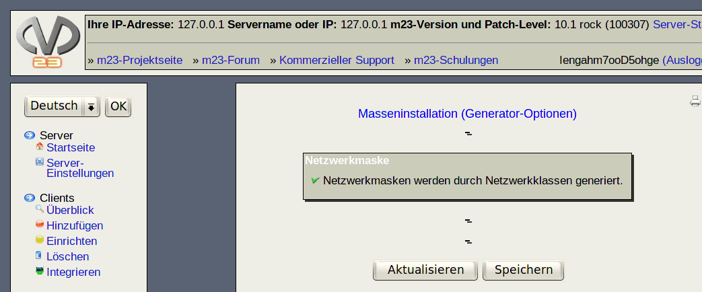

Hier können Sie die Parameter für die Generatoren der folgenden Eigenschaften festlegen:
- Clientname: Sie können hier den Client-Basis-Namen und eine Startnummer vorgeben. Die Clientnamen werden dann in der benötigten Anzahl nach dem Schema Client-Basis-Namefortlaufende Nummer erstellt. Bereits vergebene Client-Namen werden bei der Generierung übersprungen. Bsp.: Client-Basis-Name=m23client, Startnummer=12 generiert die Clientnamen m23client12, m23client13, ...
- Anmeldungsname: Dies ist der Name, mit dem sich der Benutzer am Client anmelden kann. Es stehen zwei Methoden zur Generierung zur Verfügung. Die inkrementelle Variante verhält sich identisch zur Erstellung bei ''Clientname''. Zusätzlich ist das Bilden aus dem ersten Buchstaben des Vornamens und dem vollständigen Nachnamen möglich (''Aus Vor- und Nachnamen erstellen'').
- Vorname: Die Generierung der Vornamen (die zugleich die Loginnamen sind) geschieht analog zu den Clientnamen.
- IP-Adresse: Legen sie hier die IP-Adressen-Bereiche fest, in denen nach freien IP-Adressen gesucht werden soll. Standardmäßig werden nur IP-Adressen generiert, die nicht bereits von m23-Clients benutzt werden. Sie können aber auch angeben, daß jede IP-Adresse vor der Verwendung ''angepingt'' werden soll. Sollte sich unter einer oder mehreren IP-Adressen ein Rechner melden, so werden diese IPs nicht verwendet.
- Netzwerkmaske: Die Netzwerkmasken werden automatisch nach Schema der Netzwerk-Klassen berechnet. Dieses ist per Definition folgendermaßen:
| Von |
Bis |
Netzwerkmaske |
| 0.0.0.0 |
127.255.255.255 |
255.0.0.0 |
| 128.000.000.000 |
191.255.255.255 |
255.255.0.0 |
| 192.000.000.000 |
255.255.255.255 |
255.255.255.0 |
- Erstes Login: Für dieses Login können die Paßwörter komplett zufällig (''Zufalls-Paßwörter'') oder nach einem zufälligen aber für Menschen leichter merkbaren Schema (''PwGen-Paßwörter'') angelegt werden. Außerdem kann die Länge der generierten Paßwörter zwischen 6 und 8 Zeichen Länge variiert werden. Es wird empfohlen, die voreingestellte Länge von 8 beizubehalten.
- Benutzer-ID: Legen Sie hier die Startnummer fest, ab der freie Benutzer-IDs gesucht und verwendet werden sollen.
- Gruppen-ID: Legen Sie hier die Startnummer fest, ab der freie Gruppen-IDs gesucht und verwendet werden sollen.
root
2016-10-07